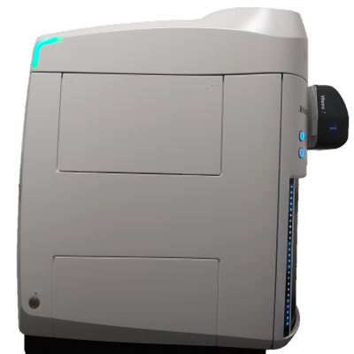

Carl Zeiss Axio Scan 7 slide scanner allows high-throughput
automated imaging of large numbers of slides loaded automatically from
a magazine with the capacity of 100 slides. A sensitive CMOS
camera allows detecting weak fluorescence while a colour
camera is suitable for transmitted light imaging of
histologically stained samples.
Available techniques:
- Transmitted light imaging
- Circular and linear polaristion contrast in transmitted
light imaging
- Widefield multi-channel fluorescence imaging
- Automated scanning of large numbers of slides
Objectives:
- Fluar 5x/0.25 dry, FWD 12.5 mm, CG 0.17 mm
- Plan Apochromat 10x/0.45 dry, FWD 2.1 mm, CG 0.17 mm
- Plan Apochromat 20x/0.8 dry, FWD 0.55 mm, CG 0.17 mm
- Plan Neofluar 20x/0.5 dry, FWD 2.0 mm, CG 0.17 mm, for
polarised light
- Plan Apochromat 40x/0.95 dry, FWD 0.25 mm, CG 0.13 - 0.21 mm
[FWD = free working distance, CG = cover glass]
Fluorescence excitation sources:
- Viluma 7 LED lamp (excitation
filters:
385/30; 423/44; 469/38; 555/30; 590/27; 631/33; 735/40)
Filter sets:
Note that only 10 filter sets can be installed at a
time; for currently installed filter sets refer to the booking system. You may request
different filter sets when booking the microscope.
- Multi-band (425/30 + 514/30 + 592/25 + 681/45 + 785/38)
- Triple-band (467/24 + 555/25 + 687/145)
- DAPI (445/50)
- GFP (525/50)
- dsRed (605/70)
- Cy 5 (690/50)
- Circular polarisation
- Linear polarisation (0 deg.)
- Linear polarisation (15 deg.)
- Linear polarisation (30 deg.)
- Linear polarisation (45 deg.)
- Linear polarisation (60 deg.)
- Linear polarisation (75 deg.)
- Reflected light brightfield
Detectors and cameras:
- Axiocam 712 mono R2 monochrome CMOS camera (4096x3008
pixels, 3.45 µm/pixel)
- Axiocam 705 color R2 colour CMOS camera
(2464x2056 pixels, 3.45 µm/pixel)
Software:
Other features:
- automatic loading of slides from a magazine of 100 slides
(76 x 26 mm)
- trays for large slide formates (76 x 52 mm and 76 x 104 mm)
- a colour camera for quick slide preview
- barcode recognition (for slide labels)
| Usage
fees [SGD/hour] |
LKCMed |
NTU |
Others (Academia/Industry) |
| 15* |
25 |
30 / 48 |
| Location |
CSB 11-02T-01 |
| Contact |
nobic.facilities@e.ntu.edu.sg |
*Reduced rates apply:
- off-peak hours (weekends,
public holidays and 18.00 - 8.30 on weekdays): 70% of
the
rate stated in the table
- 30% of the prevailing rate
applicable after 10 hours of booking/usage
- 30% of the prevailing rate
(that is already the discounted rate in this case) applicable after
24
hours of booking/usage.
BACK TO TOP